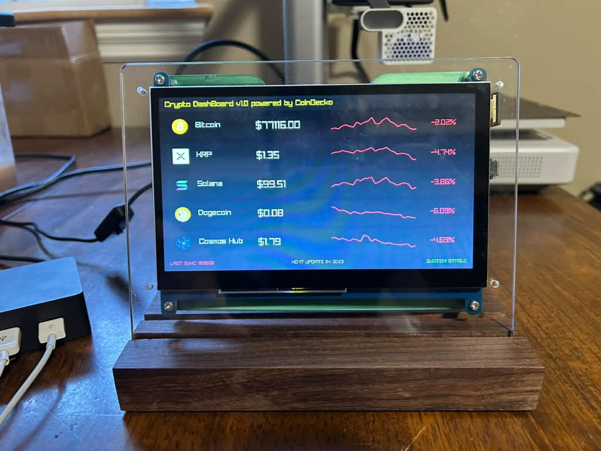
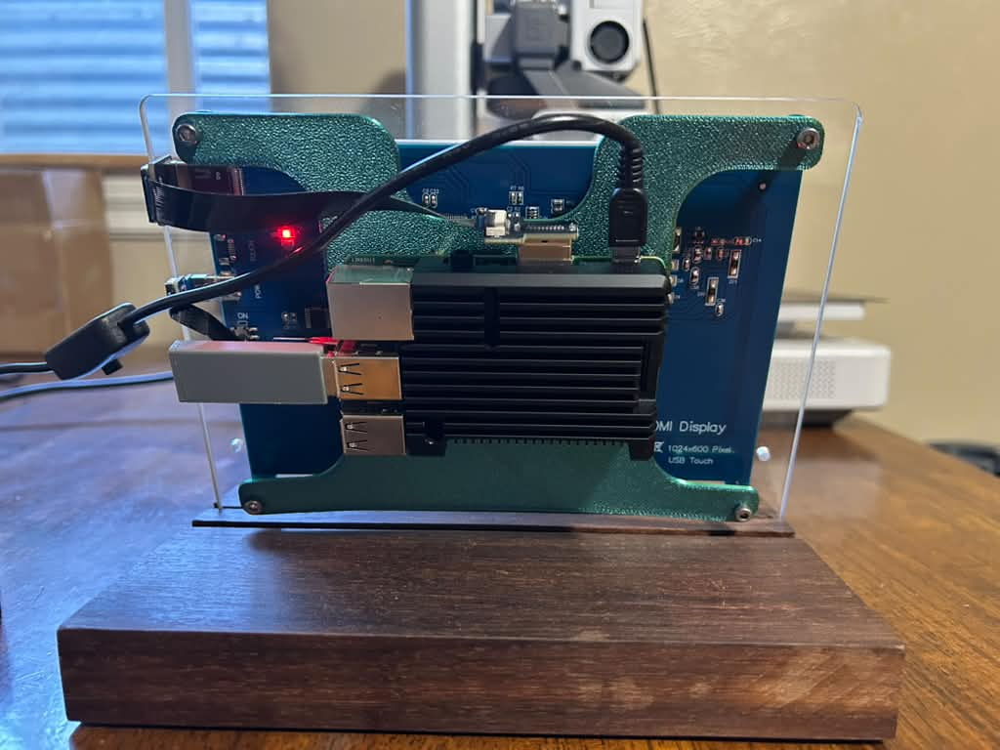

I'm a Computer Science & Software Engineering student at Montana Technological University with three software engineering internships behind me — from RF signal processing on satellite ground systems to full-stack web apps. This page is a record of that work and the personal projects I build on the side.
I got into software engineering through hands-on internship work rather than the classroom — three summers of shipping real code on real teams taught me most of what I know about building things that actually hold up in production.
My internship work has been split between low-level systems (RF signal processing, embedded C++) and high-level architectural programming in Python, with additional experience in full-stack web development (React, TypeScript). My personal projects tend to land somewhere in between- Automation, APIs, and the occasional excuse to hook a Raspberry Pi up to a data feed.
A touchscreen stock and crypto price display built for a 2.8" ESP32 TFT board. Shows live prices with historical charts (1-day, 1-month or 1-year ranges), a four-symbol multi-asset dashboard mode, and touch controls for searching tickers, switching ranges, and adjusting theme, brightness, and timezone. Sets up over WiFi via a captive portal with a QR code, and persists settings across reboots.
A cloud-based, automated cryptocurrency trading bot deployed on AWS. It uses the Coinbase API to execute trades and CoinGecko for real-time market data, algorithmically reinvesting weekly APY earnings from USDC into selected cryptocurrencies. DynamoDB tracks trade history to monitor profits, losses, and overdue positions, and an email-to-SMS system sends real-time alerts for monitoring and debugging.
A full-stack LAMP web app for planning drives along Montana's interstate highways (I-90, I-15, I-94) with real-time weather forecasts pulled from the National Weather Service API. Includes an interactive Leaflet.js map with custom filtering, point-to-point route planning, and an authenticated admin panel backed by MySQL for reviewing route search history.
A real-time cryptocurrency dashboard in C++ built to run on a Raspberry Pi with a dedicated HDMI display. Fetches live and historical price data from the CoinGecko API, processes and normalizes time-series data, and renders a graphical interface with Raylib — showing live prices, 24-hour changes, historical graphs, and system health. Built with a modular architecture, mock data support, image caching, and multithreaded API access to respect rate limits.

